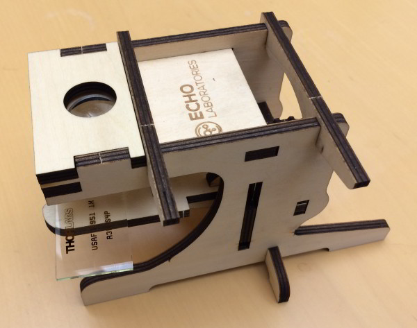

Wooden Scope

Here's a $10 wood cut out microscope that you can use with your smart phone. While the magnification isn't much, unlike Foldscope you don't have to mount your samples on a slide. It's easy to assemble and disassemble and packs flat, making it an ideal low-mag tool to put in your bag and use during field work.
Thanks to Maya Anjur-Dietrich for letting us know about this.